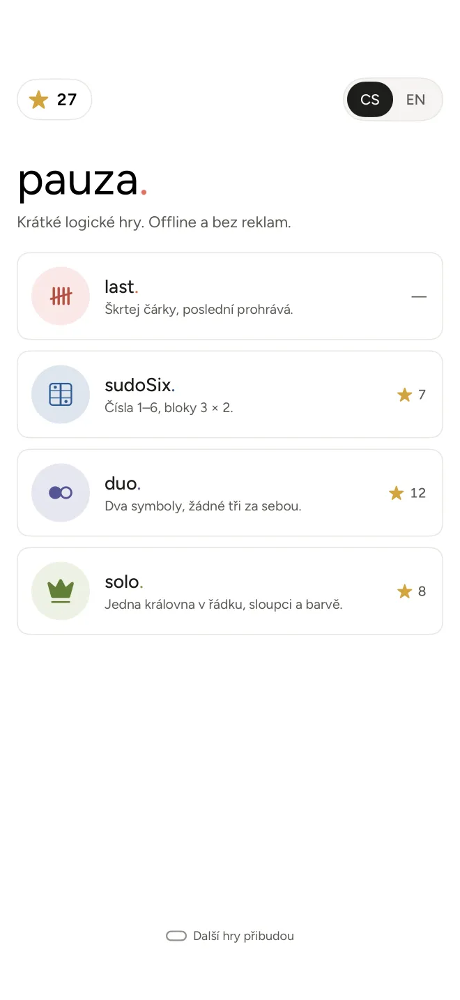
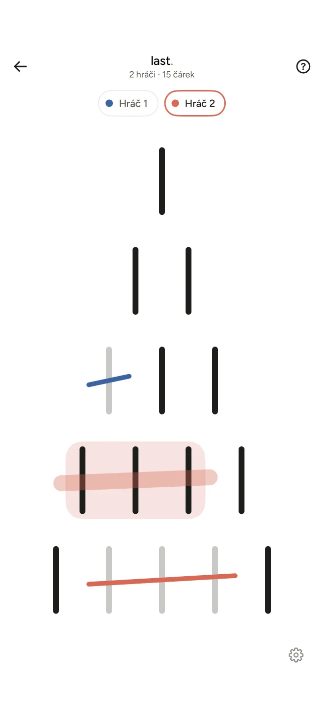
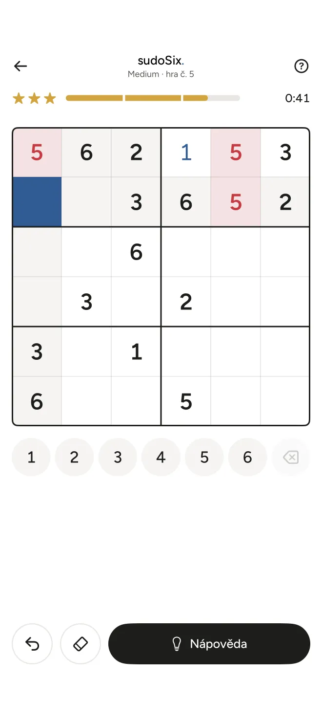
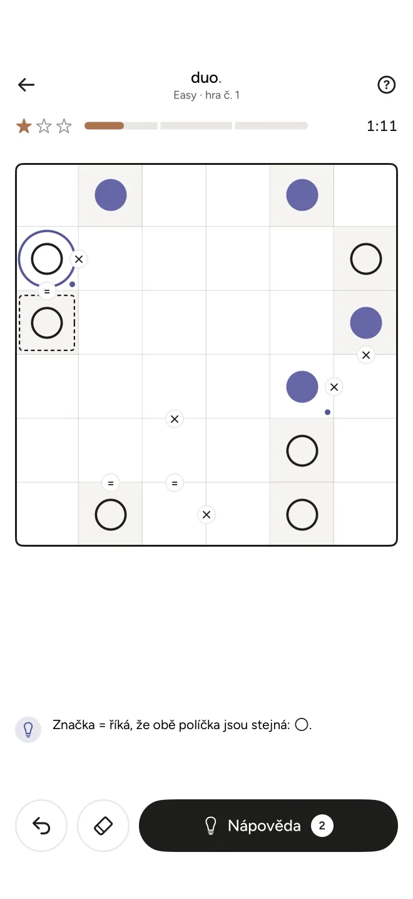
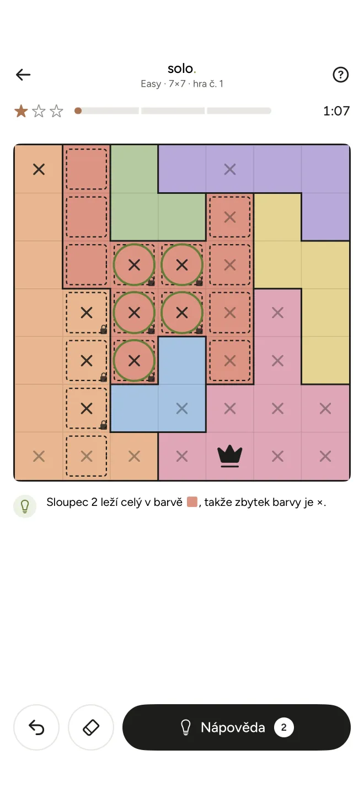

Bez reklam
No ads
Žádná vyskakovací okna, žádné čekání na odpočet, žádné žetony. Dohraješ a hraješ dál.
No pop-ups, no countdowns to sit through, no coins. Finish a puzzle and start the next one.
Krátké logické hry.
Offline a bez reklam.
Short logic games.
Offline, no ads.
Čtyři hádanky na pár minut – do tramvaje, do fronty, ke kafi. Bez vyskakovacích reklam, bez připojení, bez účtu.
Four puzzles for a few spare minutes – on the tram, in a queue, with your coffee. No pop-up ads, no connection, no account.

Většina „offline her“ tě po každém kole zdrží reklamou nebo prodává žetony. pauza. ne.
Most “offline games” stop you with an ad after every round or try to sell you coins. pauza. doesn’t.
Žádná vyskakovací okna, žádné čekání na odpočet, žádné žetony. Dohraješ a hraješ dál.
No pop-ups, no countdowns to sit through, no coins. Finish a puzzle and start the next one.
V metru, v letadle i na chatě bez signálu. Appka internet vůbec nepotřebuje.
On the subway, on a plane, at a cabin with no signal. The app doesn’t need the internet at all.
Žádný účet, žádné sledování. Skóre i hvězdičky zůstávají jen v tvém telefonu.
No account, no tracking. Your scores and stars stay on your phone.
Když se zasekneš, ukáže další krok i důvod, proč platí. Příště na to přijdeš bez ní.
Stuck? A hint shows the next step and the reason it works. Next time you won’t need it.
Tři hádanky na čas a jedna hra proti soupeři. Bez registrace, rovnou po spuštění.
Three puzzles against the clock and one game against an opponent. No sign-up – just open and play.
Škrtej čárky, poslední prohrává.
Cross out sticks, whoever takes the last one loses.
Stará známá hra se zápalkami. Čárky stojí v pyramidě a jedním tahem přeškrtneš libovolný počet čárek vedle sebe v jednom řádku. Kdo škrtne poslední, prohrál.
The classic matchstick game. Sticks stand in a pyramid, and in one move you cross out as many neighboring sticks in a single row as you like. Whoever crosses out the last one loses.

Čísla 1–6, bloky 3 × 2.
Numbers 1–6, 3 × 2 boxes.
Sudoku zmenšené na mřížku 6 × 6. Do každého řádku, sloupce i bloku patří čísla 1 až 6, každé jednou. Akorát na jednu cestu tramvají.
Sudoku shrunk to a 6 × 6 grid. Every row, column and box holds the numbers 1 to 6, each exactly once. Just right for one tram ride.

Dva symboly, žádné tři za sebou.
Two symbols, never three in a row.
Vyplň mřížku plnými a prázdnými kolečky. V každém řádku i sloupci jsou tři od každého a nikde tři stejné za sebou. Značky = a × prozradí, která sousední políčka jsou stejná a která opačná.
Fill the grid with full and empty circles. Every row and column has three of each, and never three of the same in a row. The = and × signs tell you which neighbors match and which are opposite.

Jedna královna v řádku, sloupci a barvě.
One queen per row, column and color.
Plocha je rozdělená na barevné oblasti. Rozmísti královny tak, aby byla právě jedna v každém řádku, sloupci i barvě – a žádné dvě se nedotýkaly, ani rohem. Vždy se to dá vyřešit logikou, bez hádání.
The board is split into colored regions. Place the queens so there is exactly one in every row, column and color – and no two touch, not even diagonally. Always solvable by logic, no guessing.

Sleduj nás na Instagramu a dozvíš se, až vyjde.
Follow us on Instagram to find out when it’s out.